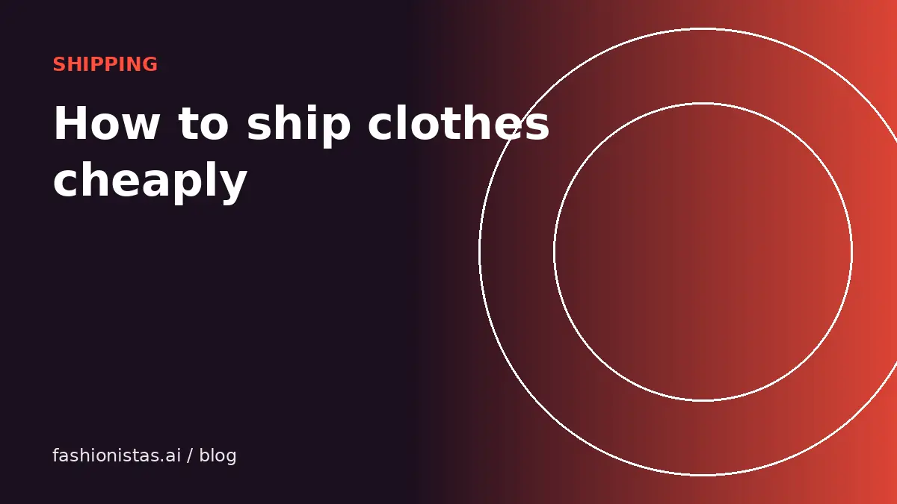

How to ship clothes cheaply when you sell online

Shipping is where a lot of resale profit quietly leaks away: an oversized box, a guessed weight, a label bought at the counter. Clothes are light and squishy, which makes them some of the cheapest things to ship if you pack them right. Here is how to choose packaging, weigh accurately, pick the right label, and avoid the mistakes that cost money.
Start with the app's own label
Most resale apps handle shipping labels for you, and for many sellers that's the cheapest and simplest option.
- Poshmark emails a prepaid label after every sale. The buyer pays a flat rate that covers packages up to 5 lb on the standard label, and heavier parcels need an upgraded label.
- Mercari lets you choose a prepaid label when listing, priced by weight, and you decide whether you or the buyer pays.
- Depop offers Depop shipping labels in the US, or you can arrange your own.
- Vinted provides a prepaid label paid for by the buyer.
- eBay sells discounted labels through its own shipping tools, and you set what the buyer pays.
On Poshmark and Vinted, the buyer pays shipping, so your job is just to pack within the weight limit. On apps where you choose, compare the app's label with the alternatives below.
Poly mailers vs boxes
For most clothing, a poly mailer (a plastic shipping bag) is the cheapest option by far.
| Packaging | Best for | Why |
|---|---|---|
| Poly mailer | T-shirts, jeans, dresses, knitwear, most soft items | Light, cheap, water-resistant, takes up little space |
| Padded or bubble mailer | Small accessories, jewelry, belts | Light protection without the weight of a box |
| Box | Shoes, bags with structure, fragile items, very heavy coats | Protects shape; required for shoeboxes and structured items |
A box adds weight and, more importantly, size. Carriers price larger parcels by dimensional weight, a formula based on size, so a big light box can cost far more than a mailer with the same item. Use the smallest packaging that fits the item comfortably.
Shoes are the exception. Ship them in their shoebox inside a slightly larger box, or at least a second layer, so the original box arrives intact. Collectors care about the box.
Weigh everything
A cheap digital kitchen or shipping scale pays for itself within a few sales. Guessing weight leads to two expensive outcomes: overpaying for a heavier tier, or underpaying and having the parcel returned or charged extra.
- Weigh the item packed, including the mailer and any tissue or note.
- Round up to the next ounce. Carriers do.
- Note common weights for things you sell often. A T-shirt might be around 6 oz packed, jeans 1 to 2 lb, a winter coat more.
- When creating a listing on Mercari or eBay, enter the packed weight so the right label is offered.
Discounted carrier labels
If you buy your own labels, never pay retail prices at the post office counter. Online labels are cheaper.
- USPS Ground Advantage is the usual choice for lightweight parcels in the US; the price depends on weight, size and distance.
- Online label services such as Pirate Ship, and the label tools inside eBay, give access to commercial pricing that is lower than counter prices.
- Priority Mail flat-rate packaging can be good value for heavy, dense items like boots, because the price doesn't depend on weight within the box limit.
Rates change, so compare the options when you buy a label rather than relying on an old price list.
Packing that looks good and arrives safe
Good packaging helps reviews, and reviews help sales.
- Make sure the item is clean, dry and lint-free.
- Fold it neatly. Tissue paper or a clean bag adds a nice touch and keeps it clean inside the mailer.
- A short thank-you note is optional but often appreciated.
- Seal the mailer firmly. Tape over any self-seal strip if the mailer is overfilled.
- Attach the label flat, with the barcode fully visible and not covered by tape or wrapped around a corner.
- Remove or cover any old labels and barcodes on reused packaging.
Avoid strong scents, smoke and pet hair. "Smells like smoke" is one of the most common complaints in resale.
Free shipping: when it's worth it
Free shipping can sell items faster, but the cost comes out of your earnings. Some apps' fees also apply to shipping charges, which changes the math; our fee comparison explains which.
If you offer free shipping, build it into the price. Our pricing guide shows how. For heavy or bulky items, it usually makes more sense to let the buyer pay shipping.
Shipping shoes, bags and coats
Bulky and structured items need a little more thought.
- Shoes: shoebox inside a second box, or the shoebox wrapped in a large poly mailer at minimum. Stuff the toes with paper to keep shape.
- Handbags: stuff with tissue to hold shape, wrap hardware so it doesn't scratch, and use a box for structured bags. Include the dust bag if you have it.
- Coats and heavy knits: fold tightly and roll if you can. A large poly mailer is usually cheaper than a box. If the packed weight pushes past a pricing tier, it may be worth comparing a flat-rate option.
- Jewelry: small padded mailer or a small box. Very small envelopes can get lost in sorting machines.
International shipping
Selling internationally widens your audience but adds customs forms, longer delivery times and more risk of loss. eBay's international shipping program can handle customs for you on eligible items. If you ship internationally yourself, fill customs forms accurately, describe the item plainly ("used cotton T-shirt"), and use a tracked service. Buyers are usually responsible for import duties, but set expectations in your listing so there are no surprises.
Save on supplies
- Buy poly mailers in bulk online. A pack of 100 costs far less per mailer than buying a few at a time.
- USPS provides free Priority Mail boxes and envelopes, but only for Priority Mail shipments.
- Reuse clean boxes and mailers from your own deliveries when appropriate, covering old labels completely.
- Keep a small station: mailers in a few sizes, tape, scale, scissors and a pen. Packing becomes a two-minute job.
Then crosslist your items so you have more to ship.
FAQ
What is the cheapest way to ship clothes?
For most clothing, a poly mailer with a discounted online USPS Ground Advantage label, or the resale app's own prepaid label, is the cheapest option. Use the smallest packaging that fits and weigh it accurately.
Should I ship clothes in a box or a bag?
A poly mailer bag is cheaper and works for most soft clothing. Use a box for shoes, structured bags and fragile items.
How much does Poshmark shipping cost?
The buyer pays a flat-rate label that covers packages up to 5 lb on the standard label. The rate is shown in the app; heavier items need an upgraded label.
Do I need a shipping scale?
It is strongly recommended. Accurate weights prevent overpaying and avoid parcels being returned or charged extra.
Is it cheaper to ship at the post office or online?
Online. Labels bought through online services or marketplace tools usually cost less than retail counter prices.